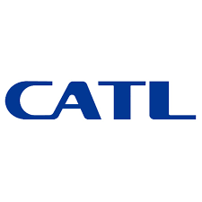
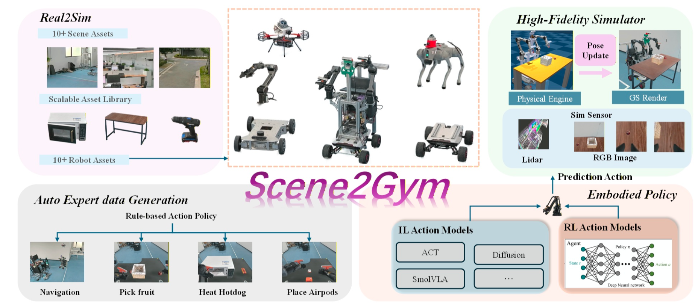
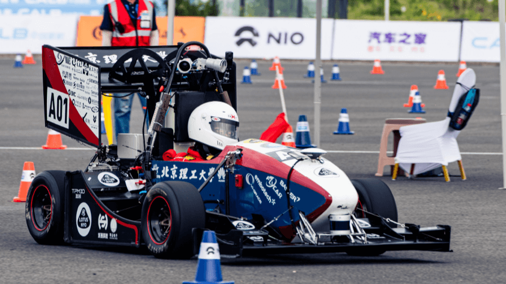
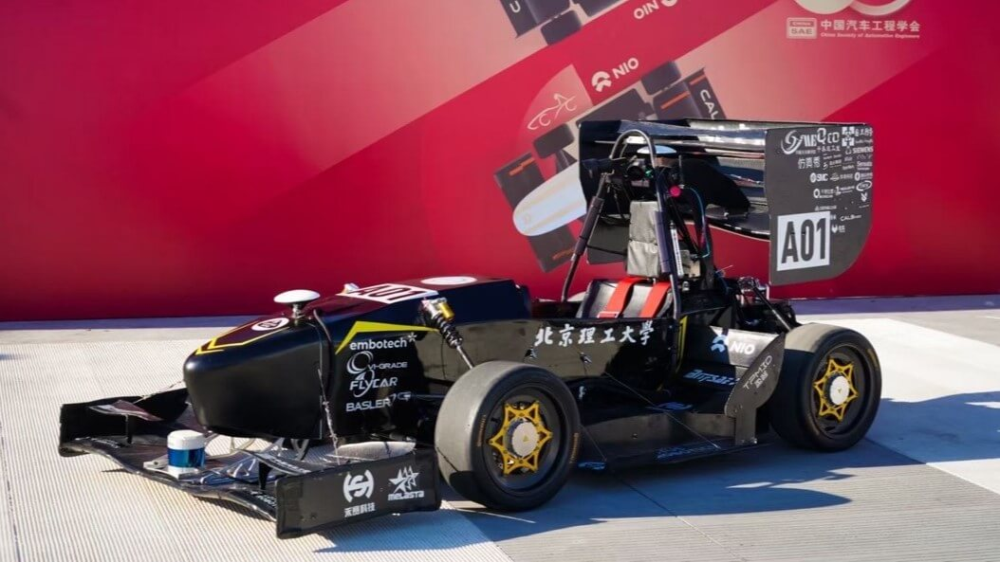
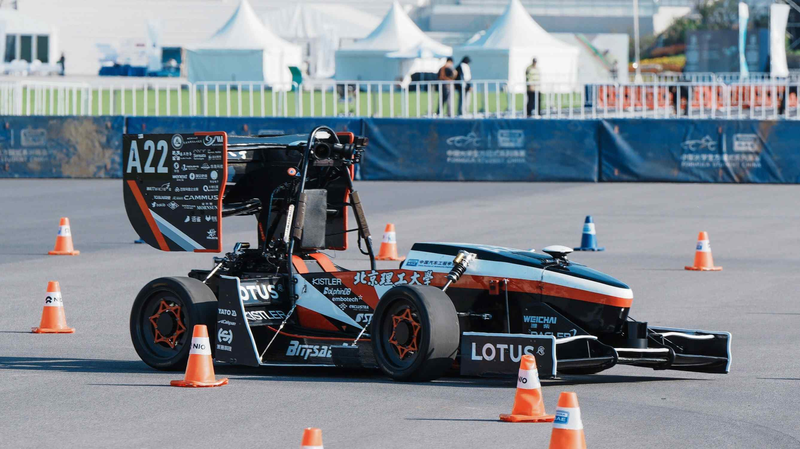
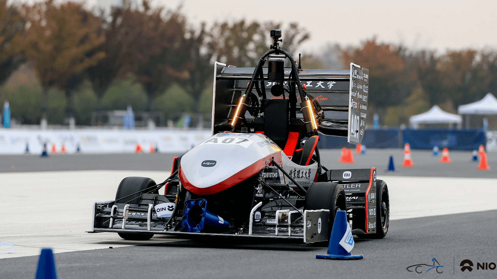

Research Interests
Embodied AI & VLA
Vision-language-action policies for long-horizon, contact-rich manipulation on real robots.
Robot Simulation & Digital Twins
Real-to-sim pipelines with Isaac Sim, MuJoCo and 3DGS rendering for high-fidelity training.
Sim2Real Transfer
Imitation & reinforcement learning that crosses the reality gap to physical hardware.
SLAM & End-to-End Driving
Localization, 3D reconstruction and end-to-end perception-to-planning systems.
News
- 2026Our paper Scene2Gym (first author) was accepted to IROS 2026. 🎉
- 2024Our paper ParkingE2E was accepted to IROS 2024 (Oral).
Experience
Xiaomi · Embodied Intelligence — Algorithm Engineer
- Building an end-to-end robot simulation training/evaluation platform on Isaac Sim + 3DGS, with real-scene reconstruction, collision-asset integration and automated scene/data generation for large-scale VLA training and Sim2Real validation.
- Developing embodied scene-synthesis algorithms that generate interactive, editable digital-twin scenes from real video — closing the loop from task-data generation and π0.5 policy training to AgiBot G2 real-robot evaluation.

CATL · Intelligent Manufacturing Division — Algorithm Engineer
- Built contact-rich manipulation algorithms for industrial wiring-harness insertion (CAD prior + visual pose estimation + insertion strategy).
- Developed an end-to-end pipeline with semantic segmentation and visuotactile fusion for industrial-grade manipulation.
- Modified end-effector hardware to enable visuotactile multimodal sensing.
Publications

Scene2Gym: Real-World Scenes to Interactive Robot Training Environments
IROS 2026
Automated real-to-sim pipeline (3DGS reconstruction + physics co-simulation); IL real-robot success 70–82% and 56% zero-shot visual-RL success on contact-rich tasks.
Formula Student
Two-time National Champion, Formula Student Driverless China (2021, 2022)
- Team: Beijing Institute of Technology Formula Student Driverless (BITFSD), 2020–2024. Website · GitHub
- Roles: Mechanical Team Lead (2021–2023), Team Captain (2024).
- Work: steer-by-wire & drive-by-wire chassis design and manufacturing, steering-dynamics simulation, plus SLAM, localization and perception for the autonomous racecar.
- 2025: served as a judge for the driverless category — software (perception & localization) design defense and dynamic-event judging.
SLAMDrive-by-wireAutonomous SteeringPerception
Four BITFSD driverless racecars I helped develop (2022–2025) — bitfsd.com:




Honors & Awards
- National Champion, Formula Student Driverless China (2021, 2022)
- Second-Class Academic Scholarship — Graduate (2025)
- Second-Class Academic Scholarship — Undergraduate (2021, 2022)
- National First-Class Athlete, Badminton (2020)
Contact
- Email jiziheng@sjtu.edu.cn
- Affiliation Global Institute of Future Technology, Shanghai Jiao Tong University, Shanghai, China
- GitHub github.com/kelo020304
- CV Download PDF